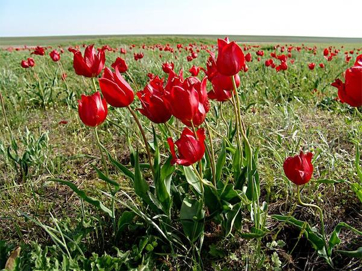
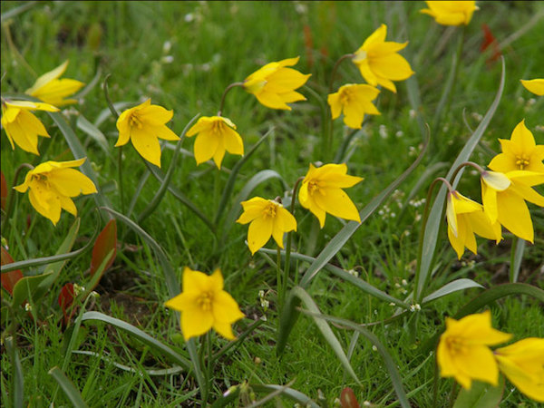

Без тюльпанов немыслима Донская степь.
Используемое в европейских языках слово тюльпан восходит к заимствованному из турецкого языка слову тюрбан, точнее – к османско-персидскому tülbend – названию ткани, из которой изготавливают тюрбаны. Слово «тюрбан» – означает восточный головной убор, похожий на бутон тюльпана. Первые упоминания о тюльпане относятся к VI –VII векам в персидских литературных произведениях. В России тюльпаны были известны с XII века. На языке цветов тюльпан – символ любви.
Дикие тюльпаны хорошо приспособлены к степному климату, растут в разных типах целинных степей, залежных землях.
| Тюльпан Шренка | Тюльпан Биберштейна |
|  |  |
В естественных местообитаниях размножается только семенами. Медленно развивается в первые годы жизни, общая продолжительность жизни 30-50 лет.Тюльпаны исчезают при распашке земли и выпасе скота. Недопустим их сбор на букеты, выкопка луковиц для пересадки в сады.
Тюльпан Шренка внесен в Красную книгу Российской Федерации и Красную книгу Ростовской области.
На берегах озёр Маныч-Гудило, Лопуховатое, Грузское в Орловском районе тюльпаны в апреле – начале мая образуют разноцветные ковры на фоне весеннего разнотравья. Тысячи людей ежегодно весной приезжают полюбоваться удивительно красивым природным явлением – цветением тюльпанов и запечатлеть на фотоаппарат или видеокамеру это степное великолепие.
Главное правило – не рвать и не топтать краснокнижные цветы.
С каждым годом всё больше людей понимают: дикие тюльпаны необходимо беречь. Это даёт веру в то, что нам удастся сохранить и приумножить красоту Донской земли.